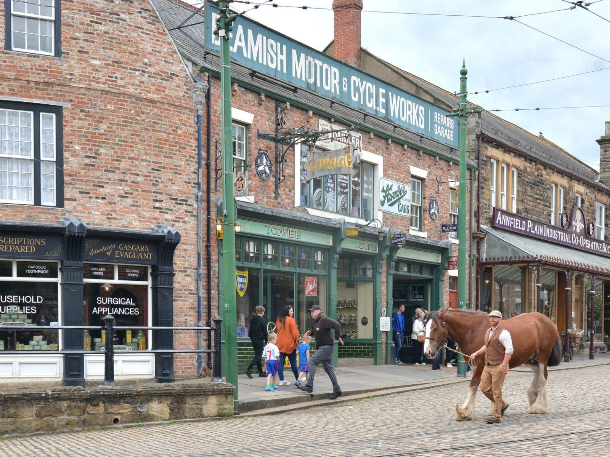
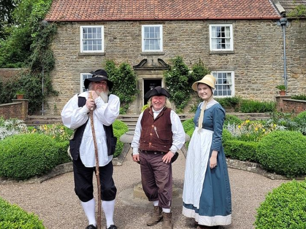
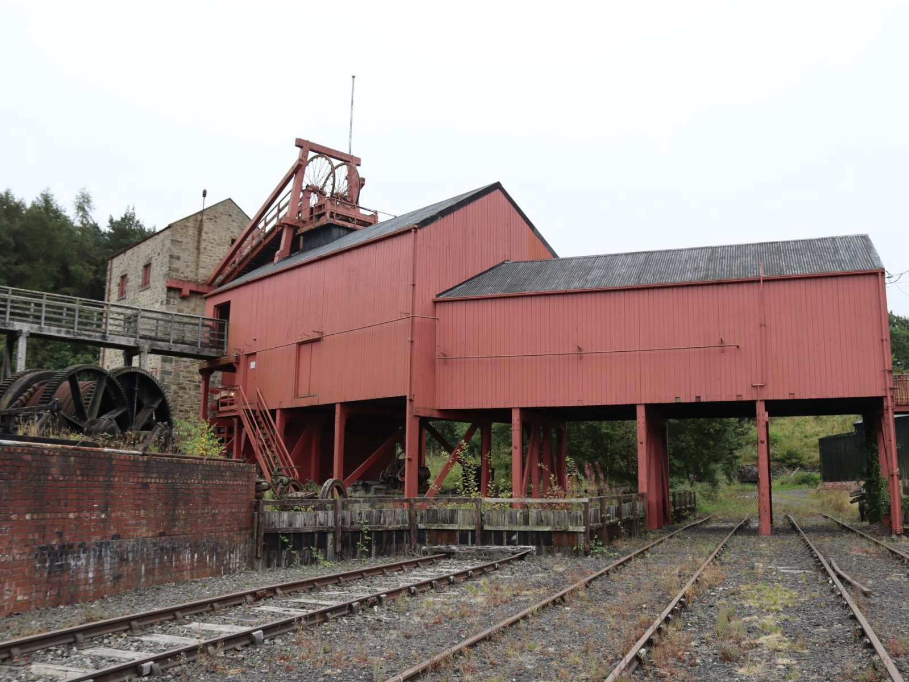
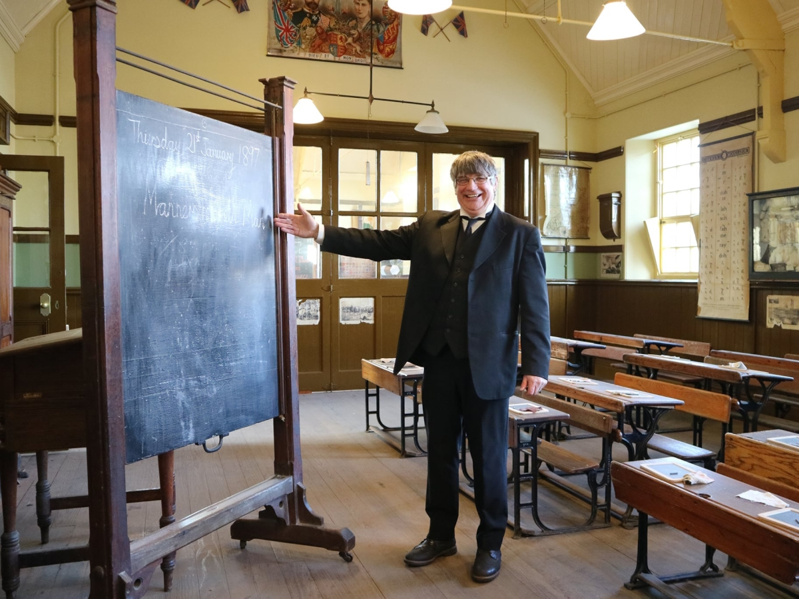
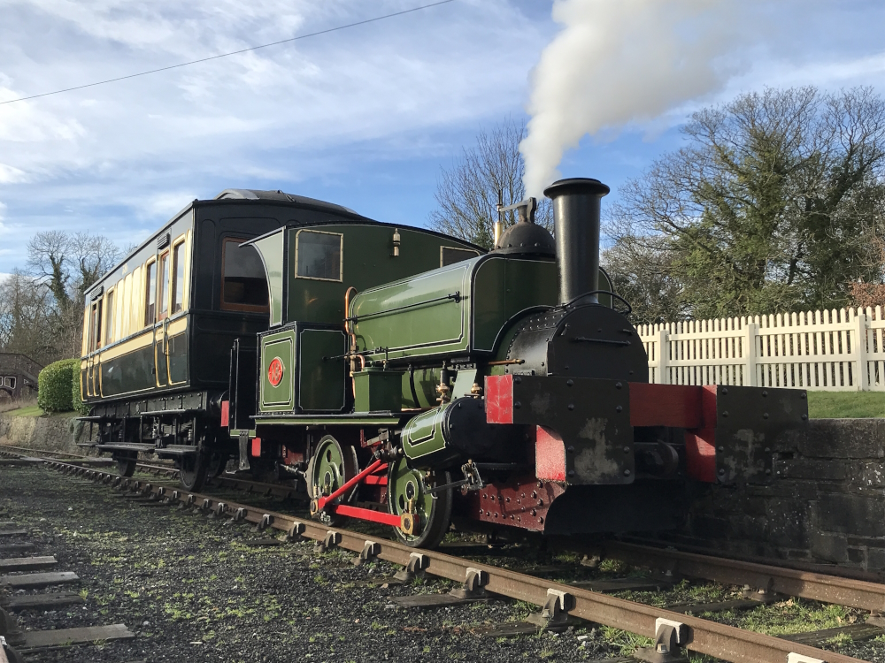
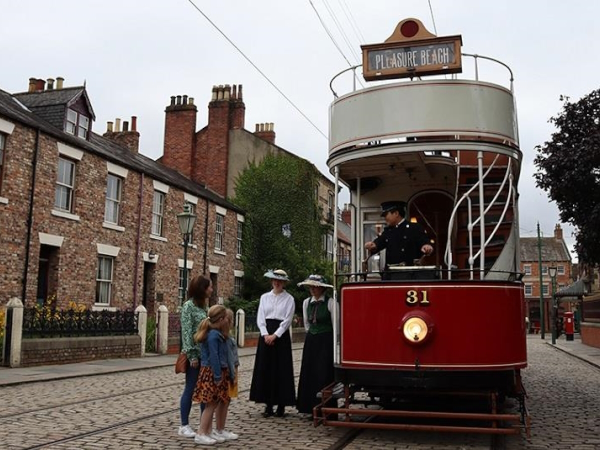
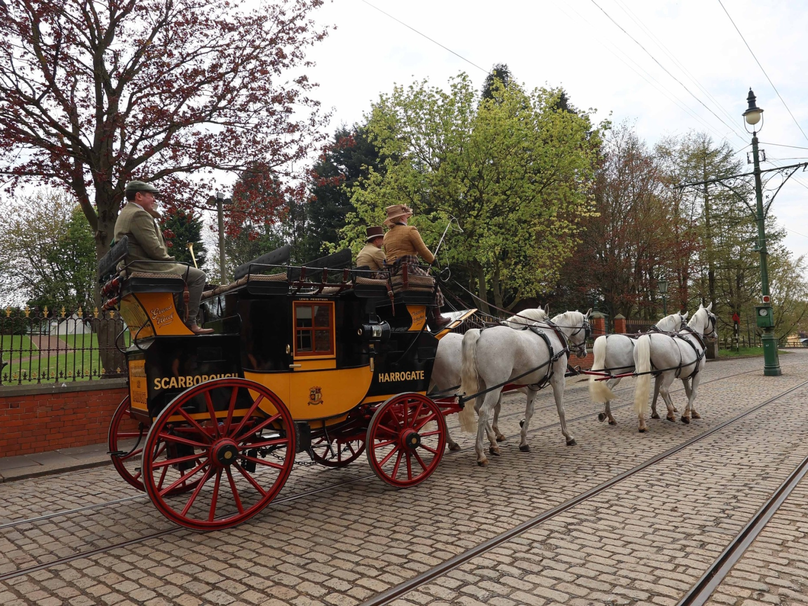
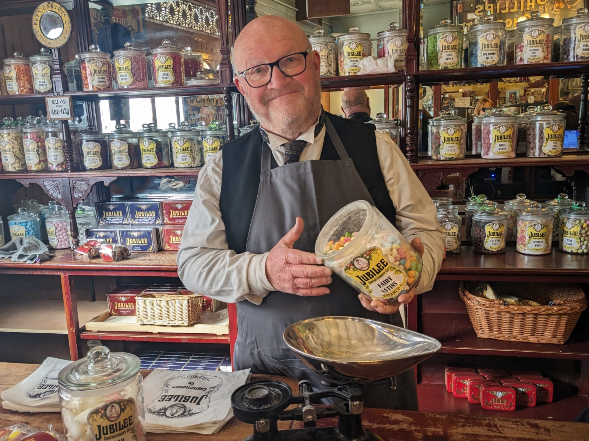

Have a look at some pictures of what you can see in Beamish Museum. With dozens of exhibits spread throughout an area of 350 acres, there's a lot to take in. This gallery will give you a glimpse at what's inside.

Stroll down the cobblestone Victorian high street, and have a look inside the variety of shops selling authentic historical merchandise.

Meet our teams of costumed actors working inside exhibits to bring them to life. Dozens of actors reprsent a huge variety of Northern life from across the years.

Coal mining was a transformative industry in the North East, and our 1900s replica colliery lets you see what it was like for the miners who worked there.

Step inside the Victorian school and see how children used to learn, or organise a trip for your own school to experience first-hand.

Railway enthusiasts will be thrilled by our extensive collection of original and replica locomotives, some even in working condition.

Get around the museum quickly using our authentic replica trams and buses, functioning as both exhibits and transport.

Or take a ride on a horse-drawn carriage. We have a variety of replica Victorian carriages pulled by our resident horses.

Bring some souvenirs and treats home from our variety of 1900s shops, including a sweet shop, chemist, and huge co-op store with hardware and groceries.